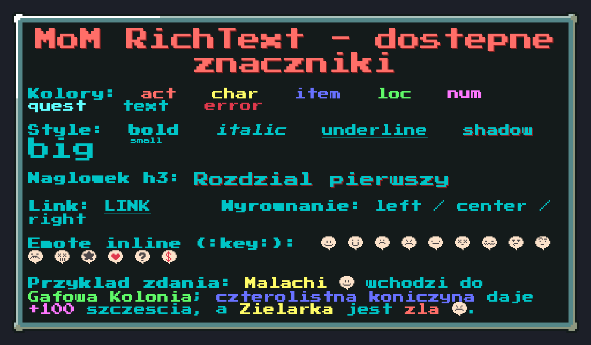
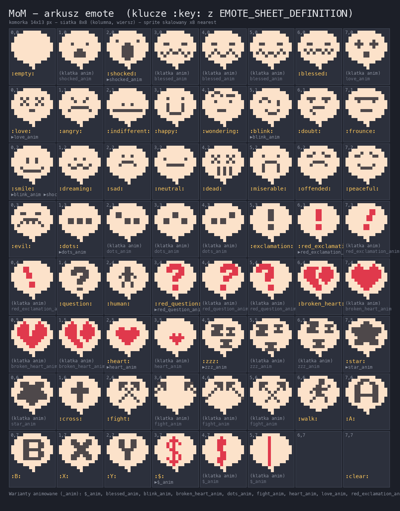
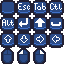

Design System · żywy dokument · aktualizacja 2026-07-19
Aktualne zasady i komponenty UI gry Misadventures of Malachi (Pygame-CE, top-down RPG, dual-target desktop + web). To jest stan docelowy, wdrożony w kodzie — nie audyt „przed".
project/ui/AGENTS.md — zwięzłe
zasady dla agentów (źródło prawdy dla kodu; ten HTML jest ich czytelną wersją).Gra renderuje cały canvas (świat + UI) w logicznej rozdzielczości 1280×720,
po czym skaluje go jako jeden obraz do rozdzielczości ekranu (settings.py
SCALE). Dlatego UI skalujemy parzyście, grubości i odstępy to
wielokrotności 2px, a border_radius jest zerowy. Jedyny wyjątek dla skalowania
ułamkowego to czcionka.
Jeden sposób na „klawisz" (sprite 32px), jeden na cień (tylko chrome), jedna paleta
(tokeny z theme.py), jeden minimalny rozmiar czcionki, jeden wzorzec stopki
ze skrótami. Panel po panelu UI rozjeżdżało się — te zasady scalają je w jeden system.
theme.pyJedno źródło prawdy. Panele importują nazwane tokeny, nigdy literały RGB. Kliknij swatch, aby skopiować hex.
Kolory znaczników RichText (STYLE_TAGS_DICT). Dwa pokrywają się
z tokenami UI: char = TITLE, text = ACCENT_CYAN.
Składnia to nawiasy kwadratowe: [tag]tekst[/] (zamknięcie [/] zdejmuje
najgłębszy tag; można też [/tag]). Emotki inline: :key:. Parser:
project/ui/text/markup.py (tabela z STYLE_TAGS_DICT). Kliknij chip, aby skopiować.

:key:Arkusz EMOTE_SHEET_DEFINITION (komórka 14×13 px, siatka 8×8). Wstaw w tekst jako
:key: (np. :blessed:). Kliknij chip, aby skopiować.

_anim)Font pikselowy, sześć rozmiarów: [8, 10, 14, 16, 24, 155].
| Stała | px | Zastosowanie |
|---|---|---|
FONT_SIZE_EXTRA_TINY | 8 | wycofane z UI nieczytelne po downscale |
FONT_SIZE_TINY | 10 | absolutne minimum chrome (liczniki) |
FONT_SIZE_SMALL | 14 | treść czytana; etykiety sekcji paneli |
FONT_SIZE_MEDIUM | 16 | domyślny |
FONT_SIZE_LARGE | 24 | tytuły paneli; separatory „/" między keycapami |
FONT_SIZE_HUGE | 155 | ekrany pełnoekranowe (zapis/ładowanie) |
Minimum: chrome ≥ 10px (TINY), treść ≥ 14px (SMALL).
Znaczniki stanu (✔ ● ○, karety, strzałki) rysuj jako kształty, nie glify.
border_radius = 0 (kanty). Świadome wyjątki: pasek sentymentu i scrollbar (schodkowo).k = max(1, round(target_h / src_h)), potem scale_by(k).nine_patch_04.png, scale 4, border 6). Sprite'y i nine-patch skaluj ×2/×4.UI_BORDER_WIDTH = 8 (parzyste), linie działowe RULE 2px.Klawisze rysuje wyłącznie ui/keycap.py — nigdy wektorowe chipy ani tekst.

HUD.png (16px ×2 → 32px)Ręczne kafle z ciemnym licem baked (kontrast dla białego glifu):
key (pusty), Esc, Tab, CtlAlt, Enter, Shift, Space↑ ↓ → ← (ręczny art)mouse, LMB, RMBscale=1.0). Downscale do 16px jest zabroniony.key (generate_icons()).HUD.png./ — „lub", większy font (FONT_SIZE_LARGE, param sep_font).– — zakres (1–6), krótka szara kreska.- to realny klawisz (zoom out).Model questów: cień tylko na chrome (nagłówki, etykiety, stopki). Proza i glify
klawiszy bez cienia. API: _text(..., shadow=False) domyślnie.
Skróty klawiszowe idą do stopki (pod linią RULE), nie do
nagłówka. Wzorzec: linia + keycap.render_hint. Lewa = zamknięcie/akcje, prawa =
hinty kontekstowe (↑ / ↓ przewiń, tylko gdy jest co scrollować).
Gruby pionowy pasek z zaokrąglonymi końcami, ale schodkowo /
kańciasto — helper theme.draw_pixel_round_rect (rogi z pełnych pikseli,
jak upscale nearest-neighbour). Nie border_radius= (antyaliasuje).
Dodatkowo scroll kółkiem myszy.
border_radius = bar_h // 2, pill), czerwony→żółty→zielony wg dyspozycji.name_tag).Zrzuty z realnej gry (headless, natywna rozdzielczość canvasu). Każdy klikalny do pełnej rozdzielczości.
theme.py); zrzuty „PO" wyżej są po zmianie. 12 → 10 tokenów UI + wycofane 2 martwe.
Pięć ciemnych tokenów zachodziło na siebie. Redukcja + wycofanie martwych tokenów:
| Teraz | hex | Propozycja | Uzasadnienie |
|---|---|---|---|
UI_BORDER | #111111 | → INK #111111 | Δ = 1/255 między nimi — nierozróżnialne. Jeden token: ramka HUD + pusty track paska/scrollbara. |
BAR_BG | #121212 | ||
PANEL_BG | #1E1E1E | bez zmian | Tło panelu (α 200), wyraźnie jaśniejsze od INK. |
RULE | #444444 | → DIVIDER #4A4636 | Ta sama jasność, różnią się tylko tonem (szary vs oliwka). Jeden ciepły token (linie działowe + separatory ekwipunku) lepiej siada na oliwkowych nine-patchach. |
DIVIDER | #46402E | ||
CAP_BG, CAP_EDGE | — | usunąć | Martwe (0 użyć) — pozostałość po keycapach rysowanych; dziś sprite'y. |
Ocieplenie jasnych neutrali do tonu palety (oliwka + żółte tytuły):
| Token | Teraz | Propozycja | Zmiana |
|---|---|---|---|
GREY | #AAAAA4 | #ADA898 | lekko cieplejszy (oliwkowy), spójny z panelami |
DONE | #6ECF68 | #5FFA68 (= loc) | ten sam zielony co RichText „lokacja" — jedna zieleń „sukces/miejsce" |
WHITE | #FFFFFF | #FBF7EC (ivory) | opcjonalnie: mniej zimny biały; do decyzji |
error (#DF394C) zostaje bez zmian —
to kolor debug, celowo krzykliwy. Po akceptacji: aktualizacja theme.py +
settings.py (STYLE_TAGS), re-capture zrzutów, odświeżenie tej palety.
Źródło prawdy: project/ui/AGENTS.md.
Podgląd: docserve start doc/_attachements/design-system-ui.html.